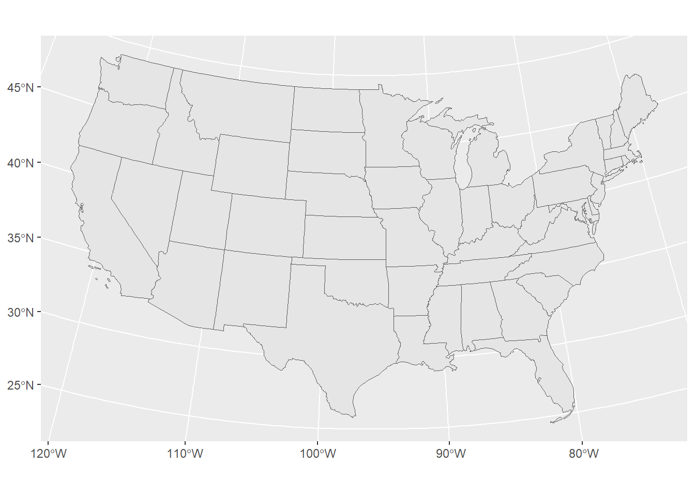
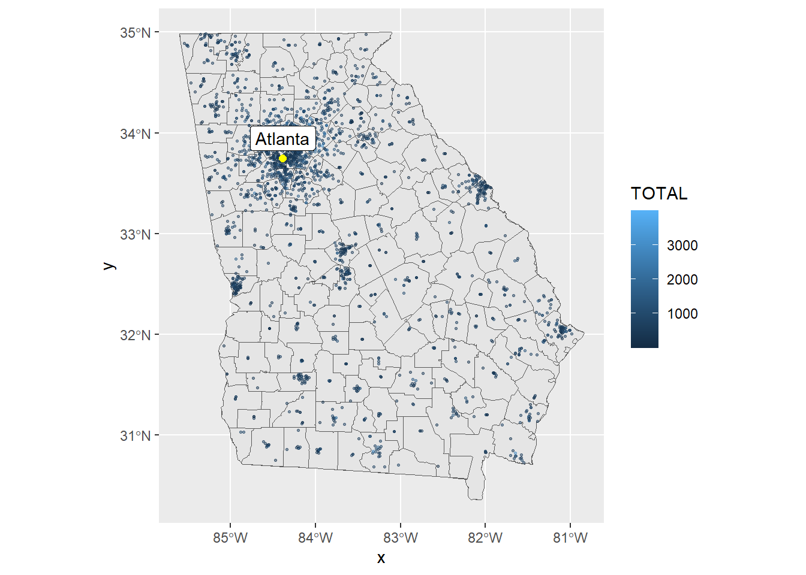
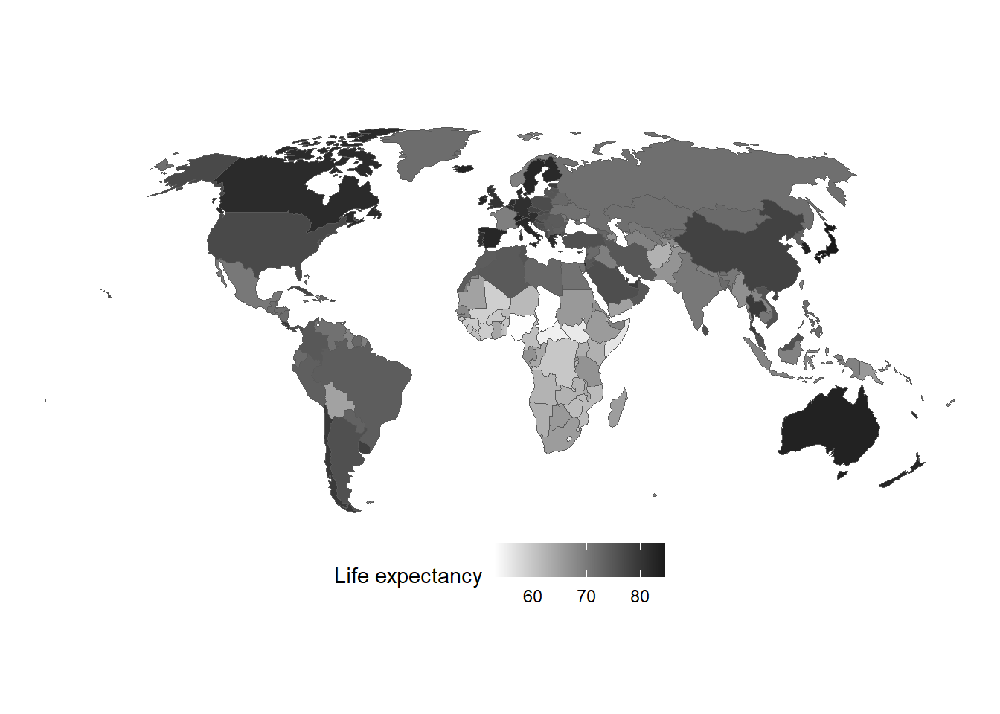

A testing script for map visualization
test with Andrew Heiss tutorial
testing

<ScaleContinuous>
Range:
Limits: 0 -- 1List of 97
$ line : list()
..- attr(*, "class")= chr [1:2] "element_blank" "element"
$ rect : list()
..- attr(*, "class")= chr [1:2] "element_blank" "element"
$ text :List of 11
..$ family : chr ""
..$ face : chr "plain"
..$ colour : chr "black"
..$ size : num 11
..$ hjust : num 0.5
..$ vjust : num 0.5
..$ angle : num 0
..$ lineheight : num 0.9
..$ margin : 'margin' num [1:4] 0points 0points 0points 0points
.. ..- attr(*, "unit")= int 8
..$ debug : logi FALSE
..$ inherit.blank: logi TRUE
..- attr(*, "class")= chr [1:2] "element_text" "element"
$ title : NULL
$ aspect.ratio : NULL
$ axis.title : list()
..- attr(*, "class")= chr [1:2] "element_blank" "element"
$ axis.title.x : NULL
$ axis.title.x.top : NULL
$ axis.title.x.bottom : NULL
$ axis.title.y : NULL
$ axis.title.y.left : NULL
$ axis.title.y.right : NULL
$ axis.text : list()
..- attr(*, "class")= chr [1:2] "element_blank" "element"
$ axis.text.x : NULL
$ axis.text.x.top : NULL
$ axis.text.x.bottom : NULL
$ axis.text.y : NULL
$ axis.text.y.left : NULL
$ axis.text.y.right : NULL
$ axis.ticks : NULL
$ axis.ticks.x : NULL
$ axis.ticks.x.top : NULL
$ axis.ticks.x.bottom : NULL
$ axis.ticks.y : NULL
$ axis.ticks.y.left : NULL
$ axis.ticks.y.right : NULL
$ axis.ticks.length : 'simpleUnit' num 0points
..- attr(*, "unit")= int 8
$ axis.ticks.length.x : NULL
$ axis.ticks.length.x.top : NULL
$ axis.ticks.length.x.bottom: NULL
$ axis.ticks.length.y : NULL
$ axis.ticks.length.y.left : NULL
$ axis.ticks.length.y.right : NULL
$ axis.line : NULL
$ axis.line.x : NULL
$ axis.line.x.top : NULL
$ axis.line.x.bottom : NULL
$ axis.line.y : NULL
$ axis.line.y.left : NULL
$ axis.line.y.right : NULL
$ legend.background : NULL
$ legend.margin : NULL
$ legend.spacing : NULL
$ legend.spacing.x : NULL
$ legend.spacing.y : NULL
$ legend.key : NULL
$ legend.key.size : 'simpleUnit' num 1.2lines
..- attr(*, "unit")= int 3
$ legend.key.height : NULL
$ legend.key.width : NULL
$ legend.text :List of 11
..$ family : NULL
..$ face : NULL
..$ colour : NULL
..$ size : 'rel' num 0.8
..$ hjust : NULL
..$ vjust : NULL
..$ angle : NULL
..$ lineheight : NULL
..$ margin : NULL
..$ debug : NULL
..$ inherit.blank: logi TRUE
..- attr(*, "class")= chr [1:2] "element_text" "element"
$ legend.text.align : NULL
$ legend.title :List of 11
..$ family : NULL
..$ face : NULL
..$ colour : NULL
..$ size : NULL
..$ hjust : num 0
..$ vjust : NULL
..$ angle : NULL
..$ lineheight : NULL
..$ margin : NULL
..$ debug : NULL
..$ inherit.blank: logi TRUE
..- attr(*, "class")= chr [1:2] "element_text" "element"
$ legend.title.align : NULL
$ legend.position : chr "right"
$ legend.direction : NULL
$ legend.justification : NULL
$ legend.box : NULL
$ legend.box.just : NULL
$ legend.box.margin : NULL
$ legend.box.background : NULL
$ legend.box.spacing : NULL
$ panel.background : NULL
$ panel.border : NULL
$ panel.spacing : 'simpleUnit' num 5.5points
..- attr(*, "unit")= int 8
$ panel.spacing.x : NULL
$ panel.spacing.y : NULL
$ panel.grid : NULL
$ panel.grid.major : NULL
$ panel.grid.minor : NULL
$ panel.grid.major.x : NULL
$ panel.grid.major.y : NULL
$ panel.grid.minor.x : NULL
$ panel.grid.minor.y : NULL
$ panel.ontop : logi FALSE
$ plot.background : NULL
$ plot.title :List of 11
..$ family : NULL
..$ face : NULL
..$ colour : NULL
..$ size : 'rel' num 1.2
..$ hjust : num 0
..$ vjust : num 1
..$ angle : NULL
..$ lineheight : NULL
..$ margin : 'margin' num [1:4] 5.5points 0points 0points 0points
.. ..- attr(*, "unit")= int 8
..$ debug : NULL
..$ inherit.blank: logi TRUE
..- attr(*, "class")= chr [1:2] "element_text" "element"
$ plot.title.position : chr "panel"
$ plot.subtitle :List of 11
..$ family : NULL
..$ face : NULL
..$ colour : NULL
..$ size : NULL
..$ hjust : num 0
..$ vjust : num 1
..$ angle : NULL
..$ lineheight : NULL
..$ margin : 'margin' num [1:4] 5.5points 0points 0points 0points
.. ..- attr(*, "unit")= int 8
..$ debug : NULL
..$ inherit.blank: logi TRUE
..- attr(*, "class")= chr [1:2] "element_text" "element"
$ plot.caption :List of 11
..$ family : NULL
..$ face : NULL
..$ colour : NULL
..$ size : 'rel' num 0.8
..$ hjust : num 1
..$ vjust : num 1
..$ angle : NULL
..$ lineheight : NULL
..$ margin : 'margin' num [1:4] 5.5points 0points 0points 0points
.. ..- attr(*, "unit")= int 8
..$ debug : NULL
..$ inherit.blank: logi TRUE
..- attr(*, "class")= chr [1:2] "element_text" "element"
$ plot.caption.position : chr "panel"
$ plot.tag :List of 11
..$ family : NULL
..$ face : NULL
..$ colour : NULL
..$ size : 'rel' num 1.2
..$ hjust : num 0.5
..$ vjust : num 0.5
..$ angle : NULL
..$ lineheight : NULL
..$ margin : NULL
..$ debug : NULL
..$ inherit.blank: logi TRUE
..- attr(*, "class")= chr [1:2] "element_text" "element"
$ plot.tag.position : chr "topleft"
$ plot.margin : 'simpleUnit' num [1:4] 0lines 0lines 0lines 0lines
..- attr(*, "unit")= int 3
$ strip.background : NULL
$ strip.background.x : NULL
$ strip.background.y : NULL
$ strip.clip : chr "inherit"
$ strip.placement : NULL
$ strip.text :List of 11
..$ family : NULL
..$ face : NULL
..$ colour : NULL
..$ size : 'rel' num 0.8
..$ hjust : NULL
..$ vjust : NULL
..$ angle : NULL
..$ lineheight : NULL
..$ margin : NULL
..$ debug : NULL
..$ inherit.blank: logi TRUE
..- attr(*, "class")= chr [1:2] "element_text" "element"
$ strip.text.x : NULL
$ strip.text.x.bottom : NULL
$ strip.text.x.top : NULL
$ strip.text.y : NULL
$ strip.text.y.left : NULL
$ strip.text.y.right : NULL
$ strip.switch.pad.grid : 'simpleUnit' num 2.75points
..- attr(*, "unit")= int 8
$ strip.switch.pad.wrap : 'simpleUnit' num 2.75points
..- attr(*, "unit")= int 8
- attr(*, "class")= chr [1:2] "theme" "gg"
- attr(*, "complete")= logi TRUE
- attr(*, "validate")= logi TRUEggplot() +
geom_sf(data = world_map,
aes(fill = life_expectancy),
size = 0.25) +
coord_sf(crs = st_crs("ESRI:54030")) + # Robinson
scale_fill_gradient(low = "grey100", high = "grey10") +
labs(fill = "Life expectancy") +
theme_void() +
theme(legend.position = "bottom")